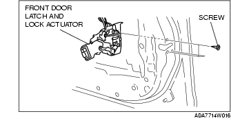

1. Remove the front door unit.
2. Remove the rod protector. (if equipped)
3. Remove the rod protector.
4. Detach the key cylinder and front outer handle rod.
5. Remove the screws, then remove the front door latch and door lock actuator.

6. Install in the reverse order of removal.